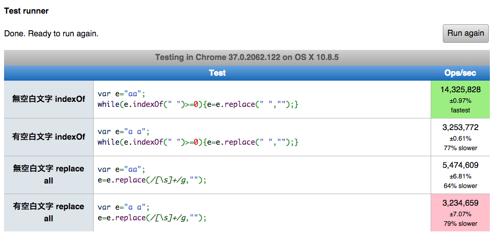

2014
Sep
05
有那么很无聊的一天，我看著公司里不知名「阿豆仔」写的一支旧程式，发现有一段很奇怪地方，为什么他只不过是要移除个空白，却写了好几行 code，若看著下面这三个程式，你是否也会觉得有点诡异?
indexOf: Remove space
- while(e.indexOf(" ") >= 0) {
- e=e.replace(" ", "");
- }
这段程式会先扫出第一个空白的位置，接著移除找到的空白，移除成功后，会再继续寻找下一个空白，然后重覆刚刚的行为。
一看到这段 code ，我想到的是，为什么不直接用「greedy replace」，这样写 「 e = e.replace(/[\s]+/g, ""); 」 ，一行就可以搞定了，也比较容易看得懂。
不过阿豆仔没事应该也不致於会乱搞，写这样的 code 一定有他的原因，我想比较有可能的原因，就是为了 Performance 的优化。
接著我做了一些 Performance测试，分成有四种。
第一种: 当字串没有任何空白时，先用 indexOf 来检查字串是否存在空白
Example
- var e="aa";
- while(e.indexOf(" ")>=0){e=e.replace(" ","");}
第二种: 当字串存在著空白时，先用 indexOf 来检查字串是否存在空白
Example
- var e="a a";
- while(e.indexOf(" ")>=0){e=e.replace(" ","");}
第三种: 当字串没有任何空白时，使用 regular expression 直接取代空白
Example
- var e="aa";
- e=e.replace(/[s]+/g,"");
第四种: 当字串存在著空白时，使用 regular expression 直接取代空白
Example
- var e="a a";
- e=e.replace(/[s]+/g,"");
你可以从 jsperf 中看到我测试的过程。
http://jsperf.com/test-reg-replace-empty/2或是直接看测试结果图
果然不出我所料，当文字里没有任何空白时，这时的 Performance 最好，但是如果文字里面有空白，用 indexOf 的方式，就不如直接用 greedy replace。
通常当你需要移除空白文字时，代表大部分的情形下，文字里面是不会有空白的，例如输入帐号的 Form 表单，或许偶尔 User 会打错字而留下空白并送出表单，但是这发生的情形不会太高，所以先用 indexOf 扫出「空白」的位置再移除他，是比较优的写法。